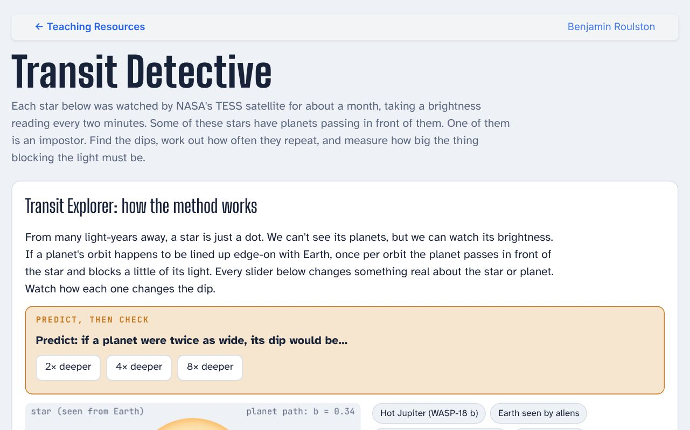
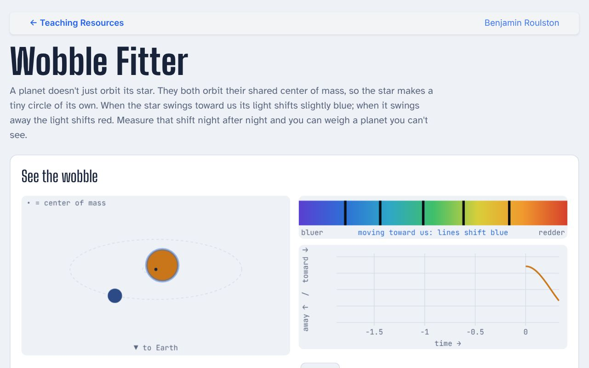
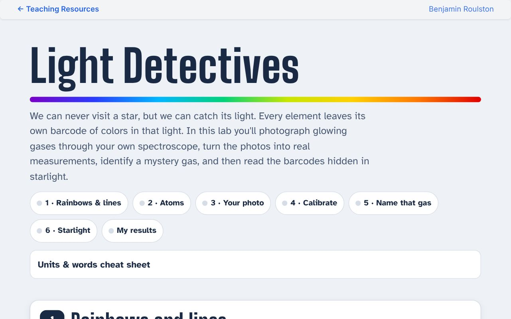
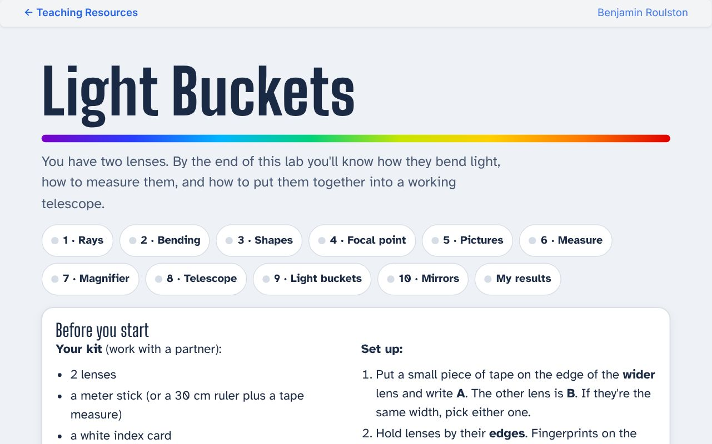
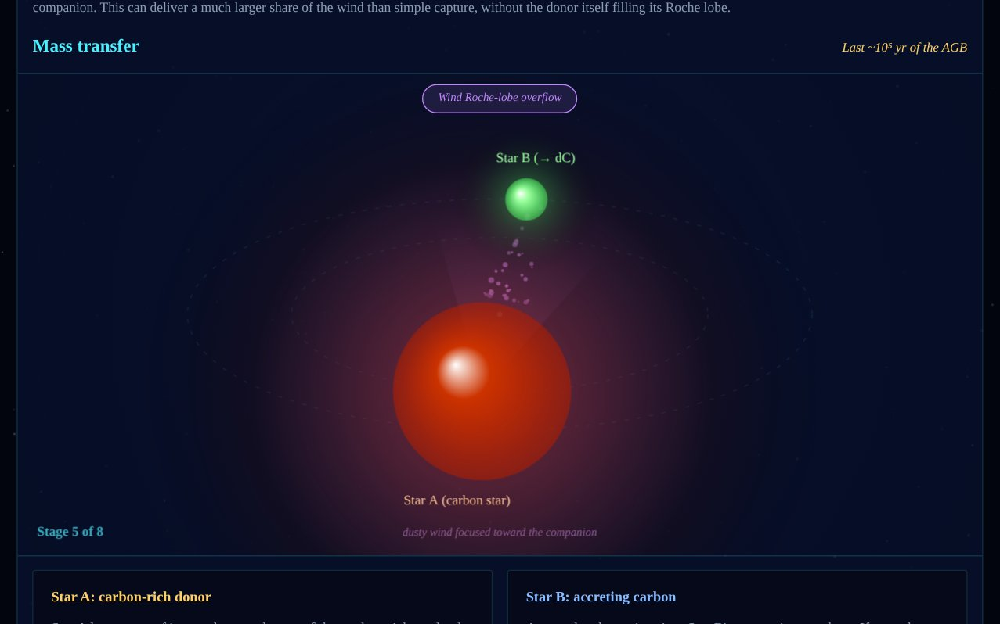

Teaching Resources
These are interactive activities, worksheets, and visualizations for teaching physics and astronomy, organized by topic. Students work hands-on with real data, using sliders, clicking, and fitting to reach the answer themselves. Everything runs in a web browser with no login or installation, and instructors and students are welcome to use them. If you use one in a class, I would love to hear how it went: broulsto@clarkson.edu.
Exoplanets
Transit Detective and Wobble Fitter work well as a pair: students first measure a planet's size from its transits, then its mass from its star's wobble, and combine the two to find what the planet is made of.

Transit Detective
Find planets in real NASA TESS light curves. Students mark the dips, fold the light curve to find the orbital period, measure the transit depth, and work out how big the planet must be. One of the stars is an impostor.

Wobble Fitter
Weigh planets you can't see. Students fit a star's radial-velocity curve to find the planet's mass, then place it on a mass–radius diagram to decide whether it is rock, water, or gas.
Light & Spectra

Light Detectives
Photograph glowing gases through your own spectroscope, turn the photos into real wavelength measurements, identify a mystery gas, and then read the barcodes of elements hidden in starlight, including a real dwarf carbon star.
Optics & Telescopes

Light Buckets
A lens lab with two real lenses. Students learn how lenses bend light, measure focal lengths, build a magnifier and a working telescope, and discover why astronomers build ever-bigger mirrors to collect more light.
Stars & Stellar Evolution

Formation of a Dwarf Carbon Star
A step-by-step animation of how a giant companion makes carbon, transfers it to a small main-sequence star, and becomes a white dwarf, leaving behind a dwarf carbon star. Useful for stellar evolution, binary stars, and the origin of the elements.
Instructors: guides with timing and discussion notes are available for some activities by email.